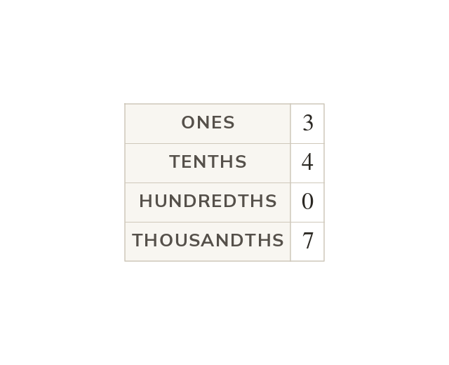

Places after the point
Each place after the point is worth a tenth of the one before. A digit's value is set by its place. In the is tenths.
Each place to the right of the decimal point is worth a tenth of the place before: tenths, hundredths, thousandths. A digit's value is set by its place, not by how many digits follow it.